자연생태복원기사(구) (2021-08-14 기출문제)
1과목: 환경생태학개론
1. 조간대 패각류의 공기 중 노출에 관한 설명으로 틀린 것은?
- 조개의 경우 좌우 패각을, 따개비들은 자신들의 배판이나 순판을 닫아버린다.
- 복족류는 썰물 시 자신의 몸을 패각 안으로 끌어 들이고 입구를 뚜껑으로 닫아버린다.
- 많은 패각류가 두꺼운 표피나 패각을 이용해 수분 손실이나 과도한 열 흡입을 방지하고 있다.
- 일반적으로 상부조간대에 분포하는 종들이 하부조간대에 분포하는 종들에 비해 온도와 건조에 대한 내성이 약하다.
(정답률: 88%)

2. 생태계에서 한 생물이 차지하는 공간적 위치와 기능적 역할 또는 생태계에서 한 종과 다른 종의 상대적 위치로 설명되는 용어는?
- 먹이망(food web)
- 생태적 지위(ecologocal niche)
- 동화효율(assimilation efficiency)
- 순 일차생산력(net primary productivity)
(정답률: 94%)
3. 다음 중 일반적으로 에너지 효율이 가장 높은 단계에 속하는 종은?
- 토끼풀
- 뱀
- 개구리
- 메뚜기
(정답률: 89%)
4. 아래의 설명에 해당하는 분야는?
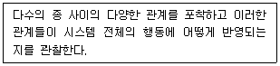
- 개체군생태학
- 군집생태학
- 행동생태학
- 생태계생태학
(정답률: 81%)
5. 해양으로 영양 염류가 과다하게 유입되었을 때 일어나는 생물학적 변화와 거리가 가장 먼 것은?
- 물의 투명도 저하
- 용존산소량의 증가
- 어족자원의 감소
- 특수종의 이상 증식
(정답률: 89%)
6. 다음 중 생물다양성 및 환경보호와 관련된 국제기구가 아닌 것은?
- IDA
- IUCN
- UNEP
- WWF
(정답률: 79%)
7. 열대산림에서 물질순환을 돕는 생물적 작용에 대한 설명이 틀린 것은?
- 뿌리 얽힘은 떨어진 잎의 영양소가 용탈되기 전에 잎에서 재빨리 영양소를 되찾아오는 역할을 한다.
- 균근 곰팡이는 생물체 내의 영양소 회수와 보유를 크게 촉진시킴으로써 영양소를 포획하는 함정과 같은 역할을 한다.
- 뿌리 얽힘은 탈질화를 일으키는 세균들의 활동을 촉진하여 공기 중으로 질소가 손실되는 것을 막는다.
- 조류(algae)와 지의류(lichen)는 나뭇잎들의 표면을 덮고 있으며, 빗물로부터 영양소를 모으고 공기로부터 질소를 고정하는 역할을 한다.
(정답률: 53%)
8. 식물에서는 종자의 전파양식이나 무성번식에 의해 일어나며 동물은 사회적 행동에 의해 동일 종의 개체끼리 유대관계를 형성하기 때문에 나타나는 개체군의 공간분포양식은?
- 규칙분포(uniform distribution)
- 집중분포(clumped distribution)
- 기회분포(random distribution)
- 균일형분포(regular distribution)
(정답률: 68%)
9. 생태계의 먹이연쇄에 관한 설명으로 틀린 것은?
- 영양단계의 분류는 종의 분류로 이루어진다.
- 천이 초기의 먹이연쇄는 단순하고 직선적인 경향이 있다.
- 먹이연쇄에 있어서 각 이동 단계마다 일정부분의 잠재 에너지가 열로 사라진다.
- 먹이연쇄가 짧을수록 이용할 수 있는 에너지의 양이 많아진다.
(정답률: 50%)
10. 미생물 또는 화산활동 및 번개의 방전 등에 의해 생태계에 유입되는 물질을 생성하는 생물지화학적 순환(biogeochemical cycle)은?
- 산소순환
- 질소순환
- 인순환
- 황순환
(정답률: 80%)
11. 생산자의 광합성 및 화학합성에 의해 방사에너지가 먹이로 이용될 수 있는 유기물의 형태로 고정되는 속도를 무엇이라 하는가?
- 생산고(standing yield)
- 현존생체량(standing biomass)
- 일차생산력(primary productivity)
- 이차생산력(secondary productivity)
(정답률: 64%)
12. 생물의 특성 중 외부 환경이 달라져도 생물체 내부의 환경은 일정하게 유지되는 경향을 무엇이라고 하는가?
- 천이(succession)
- 간섭(interference)
- 항상성(homeostasis)
- 부영양화(eutrophication)
(정답률: 93%)
13. 습지생태계에 대한 설명으로 거리가 가장 먼 것은?
- 육상생태계에 수생태계 사이의 전이지대이다.
- 다른 유형의 생태계에 비해 종다양도가 높은 생태계이다.
- 수문, 토양, 식생이 습지를 판별하고 분류하는 주요 지표이다.
- 계절적 수위변동 구간 및 일시적으로 담수가 표면을 덮고 있는 내륙의 습지는 습지로 구분하지 않는다.
(정답률: 71%)
14. 생태계 손상, 경관 저해, 관광수입 감소 등의 막대한 피해를 일으킨 유류 유출 사고에 해당하지 않는 것은?
- 씨프린스호 사고
- 엑손 발데즈호 사고
- 딥워터 호라이즌호 사고
- 쓰리 마일 아일랜드 사고
(정답률: 62%)
15. 계절 변화에 대한 과학적 연구인 화력학(phenology)에 대한 설명으로 틀린 것은?
- 화력학은 생물기후학이라고 한다.
- 종의 분포를 결정하는 기능적 제한요인이다.
- 봄꽃식물은 남사면 같은 미소서식지에서 먼저 개화한다.
- Hopkins에 의하면 북반구에서 봄은 하루에 약 27km씩 북상한다.
(정답률: 70%)
16. 경제 활동의 부작용으로 초래되는 비정상적인 군집의 형성 사례가 아닌 것은?
- 농생태계의 단순화
- 해충, 병, 잡초의 유입
- 인간에 의한 작물과 가축의 육종
- 변화된 생태계에 적응하는 자생종 유입
(정답률: 57%)
17. 생물종간 상호작용 중 A가 B로부터 일방적으로 이익을 얻으며 B에게 피해를 주는 관계는?
- 중립(neutralism)
- 기생(parasitism)
- 상리공생(mutualism)
- 편리공생(commensalism)
(정답률: 89%)
18. 생물종 다양성이 감소하는 원인으로 거리가 가장 먼 것은?
- 인구 증가
- 서식지 파괴
- 습지 보전
- 외래종 유입
(정답률: 85%)
19. 연안지역을 육지화 시키는 간척(reclamation)에 의해 나타나는 효과로 거리가 가장 먼 것은?
- 농경지 또는 산업용지 확보
- 어류, 야생조류 등 서식지 감소
- 간척지 개발에 의한 해양오염 감소
- 도로와 연안 교통망 개설 등 교통개선
(정답률: 91%)
20. 생태계 유형에 따른 현존식생도의 범례 중 '자연식생'에 해당되지 않는 것은?
- 산지산림식생
- 자연초원식생
- 계곡림식생
- 농경작지식생
(정답률: 92%)
2과목: 환경계획학
21. 생태·자연도 작성 시 권역 구분이 옳은 것은? (단, 각 등급 명칭에서 '권역' 표시는 생략한다.)
- 1등급, 2등급, 3등급, 4등급
- 0등급, 1등급, 2등급, 3등급
- 1등급, 2등급, 3등급, 절대보전지역
- 1등급, 2등급, 3등급, 별도관리지역
(정답률: 85%)
22. 도시 생태계의 일반적인 특징이 아닌 것은?
- 넓은 서식 공간을 필요로 하는 포유류나 맹금류 등 고차원적인 포식자가 서식하기 어렵다.
- 귀화 동·식물 등 도시 환경에 적응할 수 있는 특유한 종이 출현한다.
- 특정한 생물 즉 까마귀, 비둘기 등 도시화 동물의 개체수가 증가한다.
- 생물의 다양성이 높아져 생태계의 구조는 복잡해진다.
(정답률: 87%)
23. 자연환경보전법에 따른 자연환경조사와 관련하여, 아래의 빈 칸에 들어갈 내용이 모두 옳은 것은?
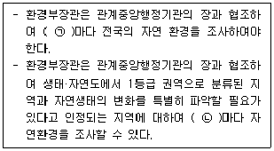
- ㉠ 5년, ㉡ 1년
- ㉠ 5년, ㉡ 2년
- ㉠ 10년, ㉡ 1년
- ㉠ 10년, ㉡ 2년
(정답률: 68%)
24. 생태공원 조성의 기본 이념이 아닌 것은?
- 지속 가능성
- 생태적 건전성
- 생물적 단일성
- 인위적 에너지 투입 최소화
(정답률: 87%)
25. 환경과 인간의 상호관계에 대한 설명이 틀린 것은?
- 환경변화는 일반적으로 크게 자연적 변화와 인위적 변화로 나눌 수 있다.
- 자연적 변화는 주기적 또는 일시적으로 일어나는 현상으로 대부분의 변화는 상당히 오랜 시간에 걸쳐 발생한다.
- 모든 생명체는 자연적 변화에 적응해 나갈 시간이 부족하기 때문에, 자연적 변화로 인한 영향을 더 많이 받는다.
- 자연의 변화는 인간의 힘이 작용할 때 매우 급속하고 예측 불가능한 변화를 일으킨다.
(정답률: 84%)
26. 환경계획 및 설계 시 고려되어야 할 사항으로 거리가 가장 먼 것은?
- 환경 위기의식이 기본 바탕이 되어야 한다.
- 계획·설계의 주제와 공간의 주체는 생물종이 되어야 한다.
- 에너지 절약적이고 물질순환적인 공간설계가 이루어져야 한다.
- 자본 창출을 위해 생산성을 높일 수 있어야 한다.
(정답률: 87%)
27. 자연환경보전법상 정의에 따라 아래의 설명에 해당하는 것은?
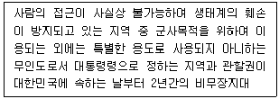
- 자연특정지역
- 자연유보지역
- 자연특별보전지역
- 자연격리지역
(정답률: 79%)
28. 열역학 제2법칙과 관련한 엔트로피에 대한 설명이 틀린 것은?
- 우주의 전체 에너지의 양은 일정하지 않다.
- 우주의 전체 엔트로피는 항상 증가한다.
- 엔트로피는 사용 가능한 에너지가 사용 불가능한 상태로 변화하는 것이다.
- 엔트로피의 증가는 자원의 감소를 의미한다.
(정답률: 52%)
29. 다음 중 벽면녹화용 식물의 권장 수종으로 거리가 가장 먼 것은?
- 모람(Ficus nipponica)
- 으름덩굴(Akebia quinata)
- 멀꿀(Stauntonia hexaphylla)
- 유카(Yucca elephantipes)
(정답률: 57%)
30. 유네스코의 인간과 생물권(Man and Biosphere) 계획에서 설정한 생물권 보전지역의 구분에 해당하지 않는 것은?
- 핵심지역(core area)
- 전이지역(transition area)
- 완충지역(buffer area)
- 보전지역(preservation area)
(정답률: 83%)
31. 정부와 시민사회가 협력하여 환경문제 등의 사회문제를 해결하는 것으로, 공유된 목적에 의해 일어나는 활동을 의미하는 것은?
- 환경 거버넌스(governance)
- 환경 비정부기구(NGO)
- 환경 옴부즈만(ombudsman)
- 환경 비이익단체(NPO)
(정답률: 63%)
32. 국토의 계획 및 이용에 관한 법령상 도시·군 기본계획에 대하여 타당성을 전반적으로 재검토하여 정비하여야 하는 기간 기준은?
- 2년마다
- 3년마다
- 5년마다
- 10년마다
(정답률: 78%)
33. 토지의 적성평가에 대한 설명이 틀린 것은?
- 도시·군관리계획을 입안하고자 하는 경우에는 토지적성평가 결과에 따라 가등급·나등급·다등급·라등급 및 마등급의 5개 등급으로 구분하여 도시·군관리계획 입안 구역의 적성등급을 부여한다.
- 토지적성평가의 시행주체는 특별시장, 광역시장, 특별자치시장, 특별자치도지사, 시장 또는 군수이다.
- 격자단위로 시행함을 원칙으로 한다.
- 도시·군관리계획 입안일부터 5년 이내 토지적성평가를 실시한 경우, 토지적성평가를 실시하지 아니하고 도시·군관리계획을 수립·변경할 수 있다.
(정답률: 77%)
34. 경제협력개발기구(OECD)는 지속가능한 지표를 개발하기 위한 공통의 접근방법으로 압력(P)-상태(S)-대응(R) 평가체제를 도입하였다. 도시 내 생물다양성 증진을 위한 환경계획 수립에서 압력-상태-대응 평가체계의 적용사례를 옳게 연결한 것은?
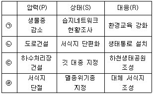
- ㉠
- ㉡
- ㉢
- ㉣
(정답률: 62%)
35. 도시·군관리계획결정으로 지정하는 취락지구의 세분 중, 개발제한구역안의 취락을 정비하기 위하여 필요한 지구는?
- 자연취락지구
- 집단취락지구
- 시설취락지구
- 농촌취락지구
(정답률: 50%)
36. 도시·군관리계획 수립 대상지역의 일부에 대하여 토지 이용을 합리화하고 그 기능을 증진시키며 미관을 개선하고 양호한 환경을 확보하며, 그 지역을 체계적·계획적으로 관리하기 위하여 수립하는 도시·군관리계획을 무엇이라고 하는가?
- 국토종합계획
- 도시·군기본계획
- 부문별계획
- 지구단위계획
(정답률: 65%)
37. 생태네트워크의 유형 분류 중 대상으로 하는 공간 특성에 따른 분류에 해당하지 않는 것은?
- 지역적 차원
- 사회적 차원
- 국가적 차원
- 국제적 차원
(정답률: 77%)
38. 도시를 하나의 유기적 복합체로 보아 다양한 도시 활동과 공간 구조가 생태계의 속성인 다양성, 자립성, 순환성, 안정성 등을 포함하는 인간과 자연이 공존할 수 있는 환경 친화적인 도시를 뜻하며, 핀란드 헬싱키의 비키(Viikki)가 대표적인 사례 지역인 것은?
- 생태도시(Eco city)
- 메가도시(Mega city)
- 압축도시(Compact city)
- 스마트도시(Smart city)
(정답률: 85%)
39. 생태발자국(Ecological Footprint)에 대한 설명이 틀린 것은?
- 리즈(Rees) 등에 의해서 1990년대에 창안된 개념이다.
- 생태발자국의 수치는 글로벌 헥타르(gha)로 표시한다.
- 지구의 수용 능력을 인간이 현재 초과하고 있음을 경고하는 지표이다.
- 재화와 용역을 만들기 위해 직·간접적으로 과거에 사용된 에너지를 태양에너지로 변환한 것이다.
(정답률: 76%)
40. 복원(restoration), 복구(rehabilitation), 대체(replacement)에 대한 설명이 틀린 것은?
- 대체는 많은 시간과 비용이 소모되기 때문에 쉽지 않다.
- 복구는 원래의 자연 상태와 유사한 것을 목적으로 한다.
- 복원은 교란 이전의 상태로 정확하게 돌아가기 위한 시도이다.
- 대체는 유사한 기능을 지니면서도 다양한 구조의 생태계 창출하는 것이다.
(정답률: 58%)
3과목: 생태복원공학
41. 매립지 복원공법 중, 하부층(세립 미사질 토층)에 파일을 박아 하단부 투수층까지 연결한 후 파일 파이프 안에 모래, 사질양토, 자갈 등을 넣어 배수를 원활히 하는 방법은?
- 사주법
- 사구법
- 전면객토법
- 대상객토법
(정답률: 60%)
42. 다음 중 식충식물이 아닌 것은?
- 통발
- 칠면초
- 파리지옥
- 끈끈이주걱
(정답률: 82%)
43. 토양개량에 쓰이는 자재 중 피토모스에 대한 설명으로 틀린 것은?
- 토양에 사용하면 대공극의 형성에 의한 팽창, 통기성의 확보, 보수기능의 향상이라는 물리적 개선효과를 기대할 수 있다.
- 양이온교환용량(CEC)이 퇴비에 비해 높다.
- 유기질자재이므로 쉽게 분해되기 어려운 성질을 가지기 때문에 지속성이 있다.
- 일반적으로 pH7 이상의 알칼리성을 나타내므로 중화처리를 하지 않아도 된다.
(정답률: 76%)
44. 포유류의 멸종위기종 증식 및 복원을 위한 기술 중에서 사육 시설 개발, 인공 증식 시스템 확립, 병리학적 위기 관리 체계 등이 속하는 분야는?
- 인공 증식 연구
- 개체군 변동 연구
- 서식지 특성 연구
- 자연으로의 복원 연구
(정답률: 83%)
45. 강산성 토양에서 과잉되기 쉬운 성분으로, 이 성분의 과잉으로 인해 P 결핍 및 Mn 과잉, K 결핍 등에 의해 영양장해가 발생함으로써 식물에 막대한 피해를 주는 것은?
- 칼슘
- 마그네슘
- 아연
- 알루미늄
(정답률: 40%)
46. 야생동물의 주요 이동 목적으로 거리가 가장 먼 것은?
- 종족의 번식을 위해
- 개체군의 분산을 위해
- 부모의 궤적을 따르기 위해
- 부적합한 환경으로부터 벗어나기 위해
(정답률: 68%)
47. 다음 지역에 대해 구형분할(矩形分割)법을 이용하여 구한 체적(m3)은? (단, 정사각형의 한 변의 길이는 10m 이다.)
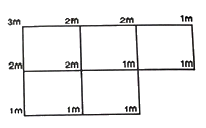
- 400
- 500
- 600
- 800
(정답률: 75%)
48. 생태통로 조성 시 서식 공간 보호를 위한 조치로 바람직하지 않은 것은?
- 도로의 위 또는 아래를 지나는 인공적 생태통로를 건설하여 생태계를 연결한다.
- 도로 등의 건설로 생물서식공간이 단절되는 경우 서식공간으로부터 분리하여 밖으로 우회시킨다.
- 육교형 통로는 주변이 트이고 전망이 좋은 지역을 선택하여 동물이 불안감을 느끼지 않고 건널 수 있도록 조성한다.
- 파이프형 암거는 일반적으로 박스형에 비하여 대형동물이 이용 가능하도록 설계한다.
(정답률: 70%)
49. 생태통로에 의하여 보호받을 수 있는 종과 거리가 먼 것은?
- 강한 이동행태를 보이는 종
- 다른 동물의 사체를 먹이로 하는 종
- 도로 등에 의하여 확산을 제약 받는 종
- 차량과의 충돌로 높은 사망률을 보이는 종
(정답률: 83%)
50. 환경포텐셜에 관한 설명 중 옳은 것은?
- 입지포텐셜은 기후, 지형, 토양 등의 토지적인 조건이 어떤 생태계의 성립에 적당한가를 나타내는 것이다.
- 종의 공급포텐셜은 먹고 먹히는 포식의 관계나 자원을 둘러싼 경쟁관계 등 생물간의 상호작용을 나타내는 것이다.
- 천이의 포텐셜은 생태계에서 종자나 개체가 다른 곳으로부터 공급의 가능성을 나타내는 것이다.
- 종간관계의 포텐셜은 시간의 변화가 어떤 과정과 어떤 속도로 진행되며 최종적으로 어떤 모습을 나타내는가를 보여주는 가능성을 나타내는 것이다.
(정답률: 70%)
51. 생태적 발자국(ecologocal footprint)의 분석을 위해 사용하는 토지분류의 카테고리가 아닌 것은?
- 경작지(cropland)
- 산림(forest)
- 어장(fisheries)
- 공원(park)
(정답률: 47%)
52. 기후인자가 토양 생성에 미치는 영향에 대한 설명으로 틀린 것은?
- 강우량이 많을수록 토양 중 염기의 용탈이 심하게 일어나 알칼리토양으로 발달된다.
- 토양생성에서 가장 중요한 것은 토양 중 물의 이동방향과 물의 양이다.
- 습윤지대에서는 식생이 왕성하여 토양의 유기물 함량이 많고 화학적 반응이 쉽게 일어난다.
- 강우량이 적은 건조지대에서는 물이 주로 상향 이동하기 때문에 토양교질물읠 하향 이동이 거의 일어나지 않는다.
(정답률: 71%)
53. 생태계의 복원원칙에 대한 설명으로 옳은 것은?
- 도입되는 식생은 생명력이 강한 외래수종을 우선적으로 사용한다.
- 각 입지별로 통일된 생태계로 조성할 수 있도록 복원계획을 수립한다.
- 적용하는 복원효과를 잘 검증할 수 있는 우선 순위 지역을 선정하여 복원계획을 시행한다.
- 개별적인 생물 구성요소인 회복에 중점을 두도록 한다.
(정답률: 68%)
54. 야생조류의 서식처 복원에 있어 인간과의 거리관계에 대한 설명이 옳은 것은?
- 비간섭거리 : 이제까지 계속하고 있던 행동을 중지하고 인간 쪽을 바라보거나 경계음을 내거나 또는 새의 꽁지와 깃을 흔드는 등의 행동을 취하는 거리
- 경계거리 : 인간이 접근하면 수십 cm에서 수 cm를 걸어다니거나 또는 가볍게 뛰기도 하면서 물러서서 인간과의 일정한 거리를 유지하려고 하는 거리
- 회피거리 : 조류가 인간의 모습을 알아차리면서도 달아나거나 경계의 자세를 취하는 일없이 모이를 계속 먹거나 휴식을 계속할 수 있는 거리
- 도피거리 : 인간이 접근한에 따라 단숨에 장거리를 날아가면서 도피를 시작하는 거리
(정답률: 56%)
55. 수로단면적이 12m2이고, 윤주가 8m인 수로의 평균 깊이(m)는?
- 1.5
- 2
- 2.5
- 3
(정답률: 78%)
56. 하천둑을 밑폭 5m, 위폭 2m, 높이 2m의 50m 연장 둑을 조성하였을 때 취토 토사량(m3)은?
- 250
- 300
- 350
- 400
(정답률: 63%)
57. 생태통로 구조물의 형태 중 육교형과 터널형에 대한 설명으로 틀린 것은?
- 주변 지형 상 육교형은 절토부, 터널형은 성토부에 적합하다.
- 긴 거리를 이동하는 경우 육교형보다는 터널형이 더욱 적합하다.
- 육교형은 도로 상부에 설치되므로 조망 및 빛과 공기 흐름이 양호하다.
- 터널형의 경우 특정종이 이용하는 반면 육교형의 경우 비교적 많은 종의 이용이 가능하다.
(정답률: 76%)
58. 토양의 용탈층에 대한 설명 중 틀린 것은?
- 토양 내 가용성 성분의 용탈이 일어나는 층이다.
- 외부에서 가해진 유기물이 점차 분해를 받게 된다.
- 분해가 더욱 진전된 유기물이 무기입자와 잘 섞이게 되므로 유기물 함량이 비교적 높다.
- 표층으로부터 용탈된 성분이 집적되는 층이다.
(정답률: 57%)
59. 자연형 하천 조성을 위한 기본방향과 가장 거리가 먼 것은?
- 자연하천 고유의 매력을 유지할 수 있도록 한다.
- 주변 자연과 생태적으로 조화되도록 정비한다.
- 물 흐름을 최대한 빠르게 하기 위해 직선으로 조성한다.
- 지천 및 상·하류의 연속성을 고려하여 계획한다.
(정답률: 77%)
60. 다음 설명에 해당하는 분석 방법은?
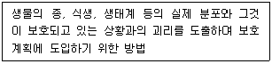
- GAP 분석
- 영역성 분석
- 시나리오 분석
- 서식처 적합성 분석
(정답률: 65%)
4과목: 경관생태학
61. 갯벌에 대한 설명으로 가장 옳은 것은?
- 갯벌은 모래갯벌, 펄갯벌, 사빈으로 구분한다.
- 펄갯벌에서는 갯지렁이류가 우점한다.
- 모래갯벌은 해수의 흐름이 느린 곳에 형성된다.
- 펄갯벌은 펄 함량이 50% 이상인 갯벌을 말한다.
(정답률: 53%)
62. 도로 건설, 도시 개발, 댐 건설 등 인간의 개발활동에 의하여 발생하는 파편화의 정도를 측정하는 항목이 아닌 것은?
- 패치의 면적
- 파편화된 패치의 배열
- 파편화된 패치의 갯수
- 주변 식물상 구조의 변화
(정답률: 63%)
63. 비오톱 지도화의 전 단계인 기초조사에서 파악되어야 할 사항이 아닌 것은?
- 토지이용유형도
- 불투수토양도
- 현존식생유형도
- 도시생태현황도
(정답률: 37%)
64. 항공 탑재체에 의한 원격탐사 종류가 아닌 것은?
- 항공기
- 열기구
- 위성
- 육안관찰
(정답률: 70%)
65. 가장자리효과(edge effect)에 대한 설명이 틀린 것은?
- 가장자리효과란 군집의 가장자리가 종밀도와 종다양성이 높은 것을 말한다.
- 숲의 가장자리에 키 작은 나무(관목)가 빽빽하게 자란다.
- 추이대(ecotone)에서도 가장자리효과가 나타난다.
- 가장자리효과는 패치의 중심부까지 깊게 나타난다.
(정답률: 65%)
66. 환경영양평가의 현황조사는 생물서식공간을 중심으로 이루어지는 것이 바람직한데, 경관생태학적 측면의 이유로 가장 적합한 것은?
- 현황조사 시 조사자들의 편의를 도모할 수 있기 때문이다.
- 모든 주요 생물종은 특정한 생물서식공간에 서식하기 때문이다.
- 모든 생물서식공간은 습지를 중심으로 발달하므로 습지보전을 위해 필요하기 때문이다.
- 저감대책 수립은 생물서식공간의 보전 우선 순위나 그 배열상태를 고려해야하기 때문이다.
(정답률: 56%)
67. 대채습지의 의무 면적(Credit) 산정 시 반드시 고려해야 할 사항이 아닌 것은?
- 영향을 받는 습지의 면적
- 영향을 받는 습지의 기능
- 영향을 받는 습지의 보전 가치
- 영향을 받는 습지의 주변 토지 이용 형태
(정답률: 60%)
68. 댐건설이 환경에 미치는 영향이 아닌 것은?
- 유수량 및 하폭 등 경관변화가 일어난다.
- 호수 내에 식생 유입이 원활하다.
- 식생 유실, 동물 서식지역 감소 및 분리현상이 나타난다.
- 미기상의 변화 및 수면을 이용하는 생물이 증가한다.
(정답률: 62%)
69. 다음 중 세계 5대 갯벌지역에 해당하지 않는 것은?
- 캐나다 동부 해안
- 네덜란드, 독일, 덴마크 및 영국을 포함하는 북해연안
- 미국 동부 조지아 해안 및 남아메리카의 아마존 강 하구
- 일본 훗카이도 해안 및 시코쿠 주변 해안
(정답률: 59%)
70. 비오톱의 지도화를 선택적 지도화, 포괄적 지도화, 대표적 지도화로 구분할 때, 다음 중 포괄적 지도화의 설명에 해당하는 것은?
- 보호할 가치가 높은 특별 지역에 한해서 실시하는 방법이다.
- 도지 전체에 대한 종합적인 지도작성을 통해 상세한 비오톱 정보를 얻을 수는 있으나, 많은 인력과 시간, 돈이 소요된다.
- 대표성이 있는 비오톱을 조사하여 유사한 비오톱 유형에 적용하는 방법이다.
- 비오톱에 대한 많은 자료가 구축된 상태에서 적용이 용이하다.
(정답률: 50%)
71. 숲에 임도와 등산로가 많아지는 것이 생태계의 종 다양성 측면에서 바람직하지 않은 이유로 가장 적합한 것은?
- 내부종이 늘어나고 가장자리 종인 덩굴식물이 줄어든다.
- 내부종이 줄어들고 가장자리 종인 덩굴식물도 줄어든다.
- 내부종이 늘어나고 가장자리 종인 덩굴식물도 늘어는다.
- 내부종이 줄어들고 가장자리 종인 덩굴식물이 늘어난다.
(정답률: 71%)
72. 도시생태계의 특성으로 거리가 가장 먼 것은?
- 태양에너지 이외에 화석연료 에너지를 도입하여야 하는 종속영양계이다.
- 외부로부터 다량의 물질과 에너지를 도입하여 생산품과 폐기물을 생산하는 인공생태계이다.
- 도시개발에 의한 단절로 인하여 생물다양성의 저하가 초래되어 생태계 구성요소가 적은 편이다.
- 모든 구성원 사이에 자연스러운 상호관계가 일어난다.
(정답률: 69%)
73. 원격탐사자료의 분광 반사율(spectral reflectance)과 관련하여, 다음 중 일반적으로 가시광선과 적외선 부근에서 가장 높은 반사율을 나타내는 것은?
- 물
- 식생
- 토양
- 암석
(정답률: 54%)
74. 서식지 파편화(habitat fragmentation)로 인해 생물다양성을 감소시키는 주요 원인이 아닌 것은?
- 분산(dispreasal)
- 초기 배제(Initial exclusion)
- 가장자리효과(Edge effects)
- 종-면적효과(Species-area effects)
(정답률: 30%)
75. 지리정보시스템(GIS)의 구성요소가 아닌 것은?
- 이용자
- 인공지능
- 자료(data)
- 소프트웨어와 하드웨어
(정답률: 62%)
76. 다음 중 경관 전체로서의 기능 즉, 생물의 이동이나 경관요소 간의 관련성을 설명하는 것은?
- 천이
- 군집
- 유전학
- 메타개체군이론
(정답률: 50%)
77. 다음 중 서식처 가장자리의 모양에 따른 가장자리 효과를 나타낸 그림으로 거리가 가장 먼 것은?
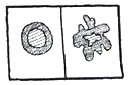
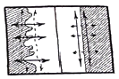
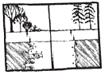
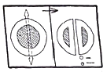
(정답률: 66%)
78. 임상도에서 얻을 수 있는 정보가 아닌 것은?
- 경급
- 영급
- 종 다양성
- 주요 수종
(정답률: 59%)
79. 파편화된 패치를 연결하는 방법으로 가장 부적합한 것은?
- 생태통로 설치
- 서식처의 확대
- 패치 수의 증가
- 징검다리녹지 설치
(정답률: 60%)
80. 경관을 이루는 기본 단위인 경관요소를 크게 3가지로 나눌 때 포함되지 않는 것은?
- 공간(space)
- 조각(patch)
- 바탕(matrix)
- 통로(corridor)
(정답률: 58%)
5과목: 자연환경관계법규
81. 야생생물 보호 및 관리에 관한 법령성 생물자원 보전시설을 설치·운영하고자 하는 자가 그 시설을 등록하고자 할 때 갖추어야 할 요건(기준)이 옳은 것은?
- 인력요건 : 생물자원과 관련된 분야의 석사 이상 학위 소지자로서 해당 분야에서 1년 이상 종사한 자
- 인력요건 : 생물자원과 관련된 분야의 학사 이상 소자자로서 해당 분유에서 2년 이상 종사한 자
- 표본보전시설 : 60제곱미터 이상의 수장시설
- 열풍건조시설 : 10마력 이상의 건조스팀발생 시설
(정답률: 54%)
82. 자연공원법상 용어의 정의와 관련하여, ( )에 들어갈 내용에 해당하지 않는 것은?
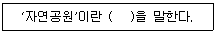
- 공립공원
- 도립공원
- 군립공원
- 지질공원
(정답률: 55%)
83. 국토의 계획 및 이용에 관한 법률상 용도지역에서의 용적률 최대한도 기준이 틀린 것은? (단, 조례로 정하는 내용은 고려하지 않는다.)
- 도시지역 중 주거지역 : 800퍼센트 이하
- 도시지역 중 녹지지역 : 100퍼센트 이하
- 관리지역 중 계획관리지역 : 100퍼센트 이하
- 관리지역 중 보전관리지역 : 80퍼센트 이하
(정답률: 44%)
84. 자연환경보전법상 환경부장관이 수립해야 하는 자연환경보전 기본방침에 포함되어야 할 사항과 거리가 먼 것은?
- 중요하게 보전하여야 할 생태계의 선정 및 생물자원의 보호
- 생태·경관보전지역의 관리 및 해당 지역 주민의 삶의 질 향상
- 생태통로·소생태계·대체자연의 조성 등을 통한 생물다양성의 보전
- 자연환경개발에 관한 교육과 국가 주도 개발 활동의 활성화
(정답률: 50%)
85. 국토기본법상 국토종합계획의 수립 주기는?
- 5년
- 10년
- 15년
- 20년
(정답률: 57%)
86. 생물다양성 보전 및 이용에 관한 법령상 정의에 따라, 환경부장관이 지정·고시한 생태계교란생물에 해당되지 않는 것은?
- 단풍잎돼지풀
- 감돌고기
- 도깨비가지
- 붉은귀거북속 전종
(정답률: 65%)
87. 야생생물 보호 및 관리에 관한 법령상 멸종위기 야생생물 Ⅰ급(종류)에 해당하는 것은?
- 고니(Cygnus columbianus)
- 흑고니(Cygnus olor)
- 검은머리갈매기(Larus saundersi)
- 독수리(Aegypius monachus)
(정답률: 49%)
88. 농지법규상 실습지 등으로 농지를 소유할 수 있는 공공단체 등의 범위 기준에 해당하지 않는 것은?
- 「한국농어촌공사 및 농지관리기금법」에 따른 한국농어촌공사
- 「전통음식보존법」에 따라 지정·등록된 한국전통음식연구원
- 「한국농수산식품유통공사법」에 따른 한국농수산식품유통공사
- 「문화재보호법」에 따라 중요무형문화재로 지정된 농요의 보존을 위한 비영리단체
(정답률: 56%)
89. 백두대간 보호에 관한 법률상 백두대간의 정의와 관련한 아래 내용에서, ( )에 들어갈 수 없는 것은? (단, 기타 대통령령으로 정하는 산줄기는 고려하지 않는다.)
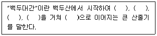
- 금강산
- 지리산
- 소백산
- 대둔산
(정답률: 65%)
90. 자연환경보존법상 생태·자연도 작성을 위한 지역 구분에서 1등급 권역에 해당되지 않는 것은?
- 생태계가 특히 우수하거나 경관이 특히 수려한 지역
- 생물다양성이 특히 풍부하고 보전가치가큰 생물자원이 존재·분포하고 있는 지역
- 멸종위기 야생생물의 주된 서식지·도래지 및 주요 생태축 또는 주요 생태통로가 되는 지역
- 역사적·문화적·경관적 가치가 있는 지역이거나 도시의 녹지보전 등을 위하여 관리되고 있는 지역
(정답률: 63%)
91. 환경정책기본법령상 환경부장관이 환경현황조사를 의뢰하거나 환경정보망의 구축·운영을 위탁할 수 있는 전문기관이 아닌 것은? (단, 그 밖에 환경부장관이 지정·고시하는 기관 및 단체는 제외한다.)
- 한국환경기술진흥공사
- 한국환경산업기술원
- 한국수자원공사
- 국립환경과학원
(정답률: 55%)
92. 독도 등 도서지역의 생태계 보전에 관한 특별법상 특정도서로 지정할 수 있는 기준이 아닌 것은?
- 수자원 이용·개발을 위해 기초단체장이 추천하는 도서
- 지형 또는 지질이 특이하여 학술적 연구 또는 보전이 필요한 도서
- 화산, 기생화산(寄生火山)의 자연경관이 뛰어난 도서
- 희귀 동식물, 멸종위기 동식물, 그 밖에 우리나라 고유 생물종의 보존을 위하여 필요한 도서
(정답률: 63%)
93. 환경정책기본법령상 오존(O3)의 대기환경 기준으로 옳은 것은? (단, 8시간 평균치)
- 0.02ppm 이하
- 0.⑤ppm 이하
- 0.06ppm 이하
- 0.10ppm 이하
(정답률: 53%)
94. 다음은 환경정책기본법령상 수질 및 수생태계 상태별 생물학적 특성 이해표이다. 이에 가장 적합한 생물등급은?
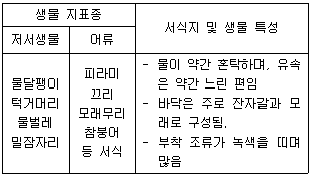
- 매우 좋음 ~ 좋음
- 좋음 ~ 보통
- 보통 ~ 약간 나쁨
- 약간 나쁨 ~ 매우 나쁨
(정답률: 67%)
95. 독도 등 도서지역의 생태계 보전에 관한 특별법상 원칙적으로 특정도서 안에서 제한되는 행위가 아닌 것은? (단, 기타의 경우는 고려하지 않는다.)
- 도로의 신설
- 택지의 조성
- 가축의 방목
- 조난구호 행위
(정답률: 68%)
96. 국토의 계획 및 이용에 관한 법률상 개발행위로 인하여 주변의 환경·경관·미관·문화재 등이 크게 오염되거나 손상될 우려가 있는 지역으로, 도시·군관리계획상 특히 필요하다고 인정되어 중앙도시계획위원회나 지방도시계획위원회의 심의를 거쳐 개발행위허가를 제한할 수 있는 기간 기준은? (단, 기타의 경우는 고려하지 않는다.)
- 1회에 한하여 2년 이내의 기간
- 1회에 한하여 3년 이내의 기간
- 2회에 한하여 2년 이내의 기간
- 2회에 한하여 3년 이내의 기간
(정답률: 50%)
97. 습지보전법상 국가습지심의위원회 심의 사항으로 거리가 가장 먼 것은?
- 습지보전기본계획의 수립
- 습지보전기본계획의 변경
- 습지 주변 지역에서의 골재 채취
- 협약 당사국 총회에서 결정된 결의문과 권고사항의 실행
(정답률: 52%)
98. 생물다양성 보전 및 이용에 관한 법률 시행령상 국가생물다양성전략 시행계획의 수립·시행에 관한 사항이다. ( ) 안에 들어갈 내용이 모두 옳은 것은?
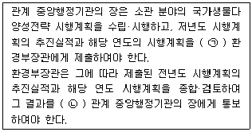
- ㉠ 매년 12월 31일까지, ㉡ 매년 1월 31일까지
- ㉠ 매년 12월 31일까지, ㉡ 매년 2월 28일까지
- ㉠ 매년 1월 31일까지, ㉡ 매년 2월 28일까지
- ㉠ 매년 1월 31일까지, ㉡ 매년 3월 31일까지
(정답률: 57%)
99. 자연환경보전법규상 생태계의 변화 관찰 대상 지역으로 거리가 가장 먼 것은?
- 생물다양성이 풍부한 지역
- 자연환경의 보전가치가 높은 지역
- 멸종위기 야생생물의 서식지·도래지
- 외래종의 유입이 빈번하여 잦은 방재가 필요한 지역
(정답률: 59%)
100. 산지관리법령상 산지에 해당하지 않는 토지는?
- 임도(林道), 작업로 등 산길
- 지목이 임야가 아닌 논두렁·밭두렁
- 입목·대나무가 집단적으로 생육하고 있는 토지
- 집단적으로 생육한 입목·대나무가 일시 상실된 토지
(정답률: 64%)